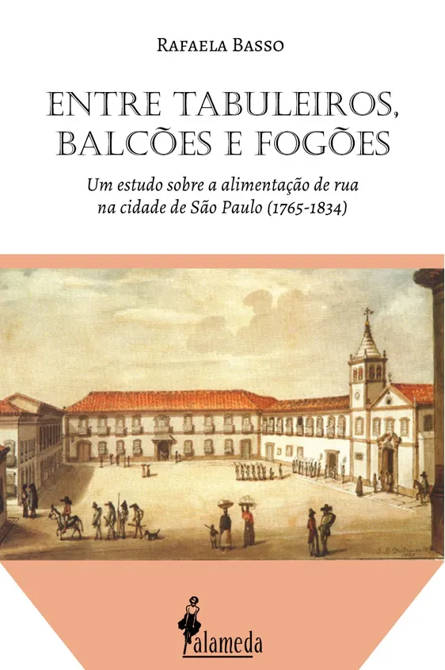
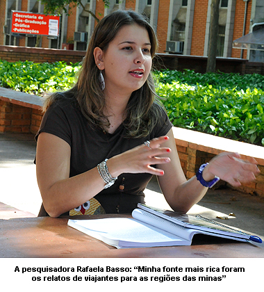
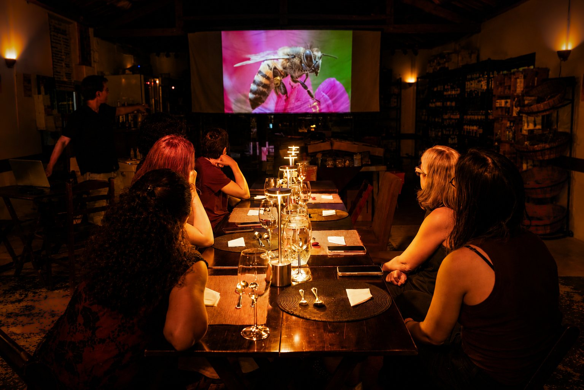

Uma viagem pelas ruas do Brasil de outros tempos
Vamos descobrir o que circulava por quitandas e tabuleiros e conhecer os espaços onde as pessoas compravam, vendiam, comiam e se encontravam.
Antes do delivery, dos food trucks e das lanchonetes, quem alimentava as ruas das cidades brasileiras?
Nesta edição do Aprender Comendo, a historiadora Rafaela Basso, pesquisadora da história da alimentação, nos convida a percorrer as ruas do Brasil de outros tempos através da comida.
O que se comia? Quem preparava e vendia esses alimentos? Quem os comprava? E o que quitandas, tabuleiros, vendas, botequins e casas de pasto podem nos contar sobre a formação da vida urbana brasileira?
Aqui, porém, a história não passa apenas pelas palavras. Durante a aula, você experimenta uma empadinha de palmito conectada ao universo histórico que estamos conhecendo.

Vamos descobrir o que circulava por quitandas e tabuleiros e conhecer os espaços onde as pessoas compravam, vendiam, comiam e se encontravam.
Mais do que uma história de pratos, vamos conhecer quem produzia e comercializava esses alimentos — com atenção especial ao protagonismo das mulheres no pequeno comércio ambulante.
Uma empadinha de palmito está incluída no bilhete e participa da experiência como uma maneira de aproximar o conhecimento histórico da experiência do paladar.
O encontro é conduzido por Rafaela Basso, historiadora da Unicamp e autora de Entre tabuleiros, balcões e fogões.

A experiência dialoga diretamente com a pesquisa de Rafaela Basso sobre a alimentação de rua na cidade de São Paulo entre 1765 e 1834 — um caminho para compreender como comida, trabalho, circulação e sociabilidade ajudaram a formar a vida urbana.
Muito antes de ser tratada como tendência gastronômica, a comida de rua já fazia parte do cotidiano das cidades brasileiras.
Quitandas e tabuleiros colocavam alimentos em circulação. Vendas, botequins e casas de pasto eram lugares de alimentação, comércio e encontro. Por trás deles estavam trabalhadores e, de maneira marcante, mulheres que encontraram no pequeno comércio ambulante formas de atuação na vida econômica das cidades.
A história das cidades também pode ser contada pelo que se comia nas ruas.
Quem podia vender? Quem comprava? Onde se comia? Quem preparava a comida? Como esses alimentos circulavam pela cidade?
Ao acompanhar essas perguntas, a aula percorre as transformações dos hábitos alimentares e mostra como a comida de rua participou da própria configuração da vida urbana e de suas formas de sociabilidade.

Porque algumas coisas podem ser compreendidas também pelo paladar.
O Aprender Comendo é um formato da Paulistânia Desvairada que aproxima conhecimento e experiência sensorial. Cursos, aulas e conversas são acompanhados por alimentos escolhidos para estabelecer uma relação concreta com aquilo que está sendo discutido.
Nesta edição, enquanto percorremos a história da alimentação de rua, uma empadinha de palmito atravessa a fronteira entre aquilo que ouvimos e aquilo que provamos.
Não é apenas uma aula com comida. A comida também é uma forma de conhecer.

Rafaela Basso é historiadora da Universidade Estadual de Campinas (Unicamp), onde se graduou em História e realizou seu mestrado e doutorado.
É autora de A cultura alimentar paulista: uma civilização do milho? 1650–1750 (Alameda, 2015) e Entre tabuleiros, balcões e fogões: um estudo sobre a alimentação de rua na cidade de São Paulo (1765–1834) (Alameda, 2022).
Possui artigos e capítulos de livros publicados na área de história da alimentação e foi professora da pós-graduação Gastronomia: História e Cultura, do Centro Universitário Senac-SP.
17 de setembro de 2026 · 19h
Duração aproximada: 1h30
Paulistânia Desvairada · Restaurante Tio Dinho
Rua João Leone, 51 · Sousas · Campinas
O bilhete inclui: participação no encontro + uma empadinha de palmito.
por pessoa
Comprar bilhete — R$ 80Vagas limitadas. Este botão já marca o ponto de conversão da página e depois receberá o link real de pagamento.
Não. A experiência é aberta a qualquer pessoa interessada no tema e não exige conhecimento prévio.
Sim. Cada participante recebe uma empadinha de palmito, incluída no valor de R$ 80.
As duas dimensões se encontram. Há uma aula conduzida por Rafaela Basso, mas o alimento participa da proposta do Aprender Comendo como outra maneira de nos aproximarmos do assunto.
A duração prevista é de aproximadamente 1h30.
Sim. O encontro foi pensado para um público amplo e interessado, não apenas para pesquisadores ou profissionais da área.